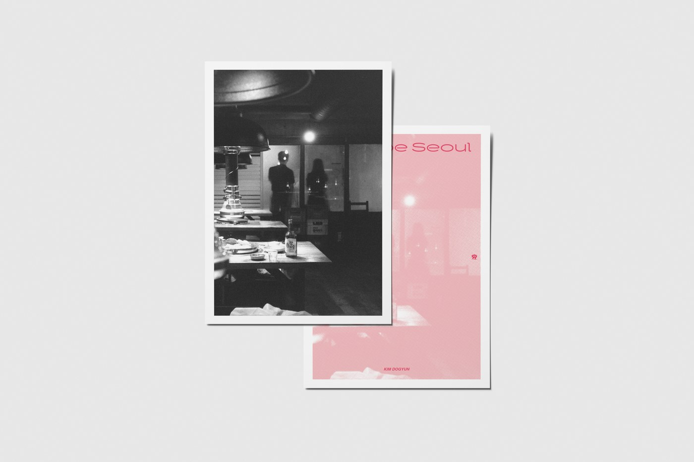

"이번 주 SPC 가 사진첩 두 권을 함께 펴냅니다. 김도균의 《비오톱 서울》과 홍민우의 《빛, 먼지, 사람》. 한 도시 한 호씩, 작가 한 명의 시선을 천천히 묶어가는 시리즈가 두 번째 권에 도착했습니다."
《비오톱 서울》 은 Street Photography Club (이하 SPC) 사진첩 시리즈의 두 번째 권입니다. 학교를 졸업하고 2021년 초 서울에 상경한 김도균 작가가, 코로나의 한가운데에서 4평짜리 방 안에 갇혀 있던 시간을 지나, 2022년 한 해 동안 다시 카메라를 들고 천천히 관찰해 모은 사진들을 묶었습니다.
'산책' 이 '용기 내야 하는 것' 으로 바뀐 사이
코로나 이전, 작가의 키워드는 〈산책 / Wandering〉이었습니다. 사람들과 자연, 그들이 만들어낸 반짝이는 풍경 사이를 카메라 하나와 함께 걷는 일은 충분히 즐거운 일이었습니다. 그런데 방 안에 갇혀 우울을 심하게 앓던 동안, 산책의 무게가 달라졌습니다. 산책이 '용기 내야 하는 것' 이 되었습니다. 사람들의 즐거움이 더 이상 자신의 즐거움이 되지 못했기에, 그는 조금 더 거리를 두고 시간을 들여 자신이 볼 수 있는 아름다운 것들을 관찰하기 시작했습니다.
비오톱이라는 단어
책의 이름이 된 '비오톱 / Biotope' 은 학술·행정 용어입니다. 특정한 식물과 동물이 하나의 생활공동체를 이루어 지표상에서 다른 곳과 명확히 구분되는 생물 서식지를 뜻합니다. 지방에서 상경한 작가에게 '서울' 은 오래전부터 다른 곳과 명확히 구분되는 하나의 지표였습니다. 다만 그 생활공동체, 그 서식지에 바로 편입될 수는 없었고, 한동안 외부인과 관찰자의 눈으로 바라보게 됩니다.
서울이란 그에게 쉽게 다가갈 수 없는 하나의 커다란 섬 같았습니다.
지난 한 해 동안 많은 일이 그를 지나갔습니다. 좋은 친구와 동료를 만났고, 일을 경험했습니다. 다행히도 우울과 함께 살아내는 방법을 조금 깨달았고, 그는 서울이라는 비오톱에 조금씩 뿌리내리고 있습니다. 다시금 관찰한 풍경들을 차근차근 카메라에 담기 시작했습니다.
화려하고 아름다운 서울은 아닙니다
이 책은 화려하고 아름다운 서울의 모습이나 풍경 사진이 아닙니다. 단지 이 사진들은 작가가 2022년 한 해를 살아내었다는 기록이고 어떤 증명 이며, 과거의 자신을 위로하고 언젠가 또 누군가를 위로할 수 있었으면 한다는 마음으로 묶인 한 권입니다.

Street Photography Club 사진첩 시리즈
우리는 거리의 순간을 기록하고자 하는 모든 이들을 위한 컬쳐 플랫폼입니다. 도시든 시골이든, 골목이든 광장이든, 우리가 서 있는 그곳이 곧 하나의 프레임입니다. 찰나를 관찰하고, 일상의 진면을 기록하며, 사람의 시선을 나눕니다.
SPC 는 거리 사진가들의 시선을 한 자리에 모으는 작은 컬처 플랫폼입니다. ISSUE.01 김지훈의 《해소의 바다, 부산》 으로 첫 권을 묶었던 시리즈가, 이번에 ISSUE.02 김도균의 《비오톱 서울》과 ISSUE.03 홍민우의 《빛, 먼지, 사람》 두 권을 한 번에 펴냅니다.
책 정보
- 제목 비오톱 서울 (Biotope Seoul)
- 작가 김도균
- 발행 4rest
- 판형 A5 (변형) / 52P
- 가격 17,000 원
- ISBN 979-11-992035-2-5